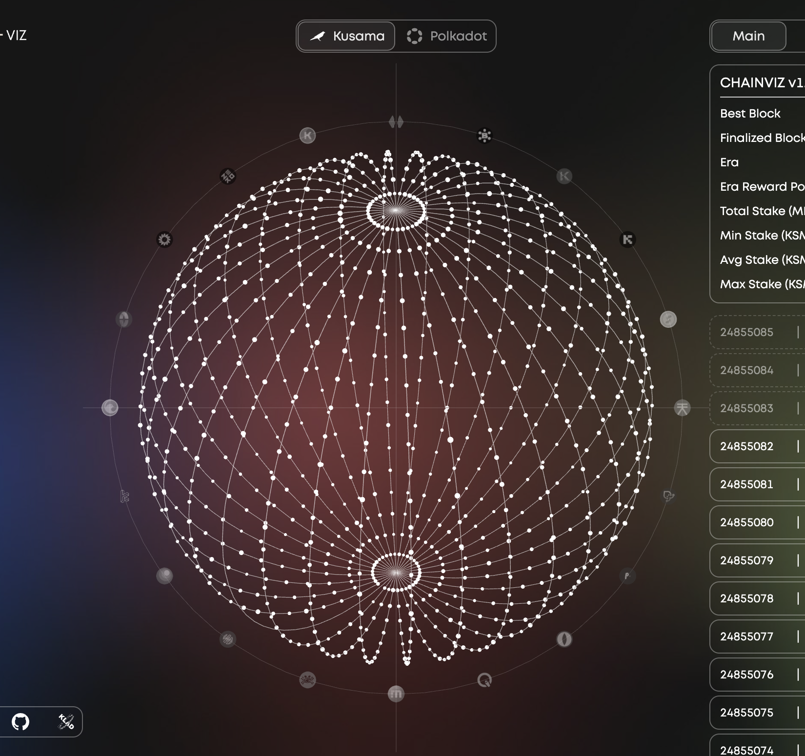
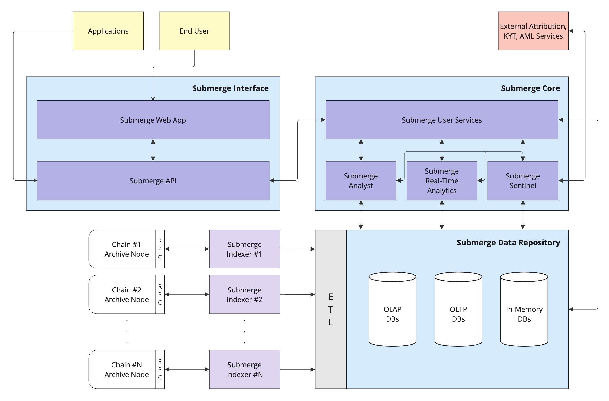

submerge.io
Open-Source Indexer, Analysis, KYT, and AML Compliance Platform
for the Polkadot Ecosystem
for the Polkadot Ecosystem
Proponent:
HELIKON (15fT...yBzL)
Beneficiary:
HELIKON (15fT...yBzL)
Date:
September 10, 2024
Request:
$180,000.00 USDT for Milestone 1 of 2
Summary:
An open-source, high-performance, high-availability multi-chain indexer, scanner, data analysis, real-time analytics, Know Your Transaction (KYT) and Anti-Money Laundering (AML) compliance platform for the Polkadot ecosystem.
Category:
Software Development
PDF IPFS CID:
CID Remark:
1. Introduction
Submerge is an open-source data platform designed and developed by Polkadot natives. It addresses several critical gaps in the Polkadot ecosystem for developers and users:
Submerge is a continuation of Helikon's previous work, building on the foundation of:
Please view section 11 for more information on the company and the team.
This proposal seeks funding for Milestone 1 of the project, which will deliver core functionalities over the 3 months following the approval of the proposal.
- Lack of indexer/explorer/scanner alternatives.
- Limited open-access data analysis and analytics tools.
- Insufficient KYT integration and intelligence gathering.
- No AML compliance research, development, and tooling.
- Insufficient real-time visualization of entities, relationships and dynamics.
Submerge is a continuation of Helikon's previous work, building on the foundation of:
- SubVT (indexing, ETL, data services, notifications, UI/UX design, mobile development),
- Chainviz (data visualization, UI/UX design, web development),
- and followthedot.live (indexing, graph visualization).

chainviz.app
This proposal seeks funding for Milestone 1 of the project, which will deliver core functionalities over the 3 months following the approval of the proposal.
2. Problem Statement
- Vendor Lock-In: Polkadot primarily relies on Subscan as the only fully functional scanner, indexer, and explorer. Alternatives such as Polkascan, Polkastats, and Polkaholic are either discontinued or unmaintained, while Statescan provides limited functionality.
- Limited Open-Access Data Analysis and Analytics Tools: Although the Parity Data Dashboards and the Dune integration expanded insights into the ecosystem networks, a comprehensive data platform is still needed. Such a platform would enable various algorithms (clustering, community detection, links, anomaly detection, autoencoders, association mining) to be applied to indexed data, offering deeper insights into account behaviors and network dynamics. Currently, no platform provides comprehensive insights into fluid network dynamics through 2D or 3D real-time and historical visualizations.
- Insufficient KYT Integration and Intelligence Gathering: Currently, there is no open-access KYT and screening solution available for institutional and individual DOT holders. While Merkle Science offers its account attribution API to Subscan and various wallets, the ecosystem needs a dedicated application to meet its attribution, analysis, KYT, and screening requirements.
- No AML Compliance Research, Development, and Tooling: There is no comprehensive effort in AML research, compliance or tooling development within the Polkadot ecosystem. This limits the network's ability to detect and prevent suspicious (financial) activities. A reliable solution is crucial for ensuring long-term trust and regulatory compliance.
3. Proposed Solution
Submerge proposes a comprehensive data processing platform to address the challenges identified in the Problem Statement section.

-
Submerge Indexer
We will leverage our expertise from developing the SubVT Indexer to build a high-performance, high-availability, open-source multi-chain indexer in Rust. The indexer is going to be responsible for fetching the blockchain data from RPC archive nodes, and feeding it into the ETL layer, which in turn will store the data in OLAP, OLTP and in-memory databases to address the high-availability and performance requirements of various use cases.
We will implement a block scanner/explorer web application to present the complete blockchain data to the users. It will provide an interface to all Submerge services and account management functionalities (visualizations, Analyst, Sentinel, settings, credits, API keys, etc.). -
Submerge Analyst and Real-Time Analytics
The Analyst component will host various data analysis algorithms to be applied to the indexed data, allowing users to discover clusters, relationships, associations, and anomalies in the blockchain data. The component will also run graph algorithms for deep, network-wide and inter-network analytics. The Real-Time Analytics component will monitor newly produced blocks, running analysis algorithms on state data, allowing users to gain real-time insights and receive notifications. -
Submerge Sentinel
The Sentinel monitors blockchain state changes in real-time for anomalies and security breaches, identifying and flagging suspicious activities in coordination with the Analyst and Real-Time Analytics components. We will collaborate with regulators and institutions to understand their compliance requirements and ensure they are effectively integrated into the Polkadot ecosystem. We will also focus on securing the ecosystem by integrating external KYT/AML service providers while also building our own intelligence-gathering capabilities.
4. Key Benefits
- Ecosystem Resilience: Submerge offers a robust alternative to existing indexing solutions, eliminating the dependency on a single solution. This ensures resilience and stability.
- Seamless Onboarding: We will help onboard new and existing development teams by providing a seamless process that minimizes costs and initial integration efforts. Submerge will offer the best path for teams to make their data and insights available to their audiences.
- Enhanced Security, Compliance, and Transparency: Submerge will enable real-time monitoring and reporting of suspicious activities, historical analysis through previously unavailable facilities, and increased visibility into account relationships and network dynamics. These features will introduce new security, compliance, and transparency levels for the Polkadot ecosystem.
- Stake-to-Access (S2A): A brand new utility for the DOT Token: Submerge's basic features will be free for all DOT holders, while premium features will reward larger DOT stakeholders. By staking DOT, users unlock premium features, driving increased demand for the token and creating additional network utility.
5. Project Overview
The project consists of 2 milestones. Each milestone will be a separate proposal. Below is an overview of Milestones 1 and 2.
We will publish monthly progress reports to inform the community on the developments.
We will publish monthly progress reports to inform the community on the developments.
Legend:
| T0 | Milestone 1 official start date. Planned November 1st, 2024 |
| T1 | End of Milestone 1, beginning of Milestone 2. Planned February 1st, 2024. |
| ✅ | Task completed as part of the milestone. |
| ⏳ | Task partially completed as part of the milestone. |
Milestone 1 (Current Proposal):
- Duration: T0 + 3 months
- Cost: $180,000 USDT
- Deliverables:
- ✅ Data Repository
- ✅ Indexer
- ✅ Analyst
- ✅ Notification Manager
- ✅ KYT/AML Integration
- ⏳ API
- ⏳ Web Application
- ⏳ Real-Time Analytics
- ⏳ Sentinel
- A detailed breakdown of Milestone 1 activities and deliverables is under Project Details.
Milestone 2 (Next Proposal):
- Duration: T1 + 3 months
- Cost: $189,000 USDT
- Deliverables:
- ✅ API
- ✅ Web Application
- ✅ Real-Time Analytics
- ✅ Sentinel
- A detailed breakdown of Milestone 2 activities and deliverables is under Project Details.
6. Project Details
Milestone 1 Breakdown
| Component | Task & Deliverables | |
| ✅ | Data Repository |
|
| ✅ | Indexer |
|
| ✅ | Analyst |
|
| ✅ | Notification Manager |
|
| ✅ | KYT/AML Integration |
|
| ⏳ | API |
|
| ⏳ | Branding and Web Application Design |
|
| ⏳ | Real-Time Analytics |
|
| ⏳ | Sentinel |
|
Milestone 2 Breakdown
| Component | Task & Deliverables | |
| ✅ | API |
|
| ✅ | Web Application |
|
| ✅ | Real-Time Analytics |
|
| ✅ | Sentinel |
|
| ✅ | Integration and Testing |
|
Supported Chains:
By the end of Milestone 2, the platform will support Polkadot and Kusama relay chains, and their parachains as listed below.
- Polkadot
- System Parachains (Asset Hub, Bridge Hub, Collectives, Coretime, People)
- Parachains (Bifrost, Centrifuge, Hydration, Hyperbridge, Moonbeam, Mythos)
- Kusama
- System Parachains (Asset Hub, Bridge Hub, Coretime, People)
- Parachains (Bifrost, Moonriver)
7. Team Structure, Responsibilities and Costs
A total of 6 FTE will be dedicated to the full 6-month development period.
Resources Costs (will stop at the end of the 6 months)
| Role | Responsibilities | Monthly Cost |
| Project Manager, Architect & Lead Developer |
|
$8,000 |
| Design Team |
|
$6,000 |
| Data Analyst |
|
$8,000 |
| Systems Developer |
|
$7,000 |
| Full-Stack Developer |
|
$5,500 |
| Content Production |
|
$2,000 |
| Monthly Total | $36,500 | |
| 3 Months Total | $109,500 | |
| 6 Months Total | $219,000 |
Running Costs
| Role | Responsibilities | Monthly Cost |
| Infrastructure and Maintenance |
* Helikon runs all of its validation, infrastructure and application services on its own servers hosted in a data center. We will dedicate a new rack of high-performance hardware to Submerge and acquire symmetrical 5G bandwidth separate from our current services. |
$5,000 |
| KYT/AML External Data Provider Fees |
|
$20,000 |
| Monthly Total | $25,000 | |
| 3 Months Total | $75,000 | |
| 6 Months Total | $150,000 |
8. Pricing Model: Free Tier & Stake to Access (S2A)
We aim to make the entire core application free for the Polkadot community. The indexer/scanner web application will be accessible to everyone at no cost, while our other 2 applications (Analyst and Sentinel) will be available to all DOT holders based on their staked DOT.
Depending on the amount staked, users will receive monthly credits to access the applications, creating additional utility for the DOT token. This new approach, which we call “Stake to Access” (S2A), offers a sustainable and community-friendly funding model. In the future, we may explore using staking rewards from our validators to cover operational costs.
Depending on the amount staked, users will receive monthly credits to access the applications, creating additional utility for the DOT token. This new approach, which we call “Stake to Access” (S2A), offers a sustainable and community-friendly funding model. In the future, we may explore using staking rewards from our validators to cover operational costs.
9. Ecosystem Fit & Benefits
| Submerge | Chainalysis | Scorechain | GlobalLedger | |
| Free Forever for All DOT Holders | ✅ | ❌ | ❌ | ❌ |
| Complete Scanner/Explorer | ✅ | ❌ | ❌ | ❌ |
| Existing Substrate Expertise | ✅ | ❌ | ❌ | ❌ |
| Existing DOT KYT/AML Data | ❌ | ❌ | ❌ | ❌ |
| Number of Supported Chains | 19 | 5 | 10 | 11 |
| Educational Material | ✅ | ✅ | ✅ | ✅ |
| Delivery Time | 6 months | 12 months | ❓ | 26 months |
| Open Source | ✅ | ❌ | ✅ | ❌ |
| Price | $369K | $6.51M | $508K | $1.72M * |
* 400K DOT @ $4.31
= $1,724,000
= $1,724,000
10. What Happens After Milestone 2?
After Milestone 2 is completed and the project delivered, the scanner/explorer will remain free forever for everyone. The S2A credit model will continue.
11. Company Background & Team Information
The team behind Submerge has a proven track record in delivering high-quality open-source projects within the Polkadot ecosystem, including:
Helikon is a member of the Polkadot and Kusama Thousand Validators programs, and the Infrastructure Builders Program (IBP). Helikon provides RPC services for 28 ecosystem chains through 56 archive nodes.
These projects and services demonstrate our technical capability and commitment to the growth of the Polkadot network.
We will hire for the Data Analyst and Full-Stack Developer positions, for which several candidates are under consideration. Brand and graphic designers will be hired under our partnership with Klad. The rest of the team members and design team management are listed below.
- SubVT Indexer and Backend System [GitHub]
- SubVT Kusama and Polkadot Telegram Bots [GitHub]
- Developed under W3F Open Grant #706
- Polkadot Bot
- Kusama Bot
- SubVT iOS - for iPhone, iPad and Apple Watch [GitHub]
- SubVT Android [GitHub]
- followthedot.live [GitHub]
- richvalidator.me [GitHub]
- Chainviz Alpha [GitHub]
- Chainviz [GitHub]
- Developed under W3F Open Grant #1254
- Chainsynth [GitHub]
Helikon is a member of the Polkadot and Kusama Thousand Validators programs, and the Infrastructure Builders Program (IBP). Helikon provides RPC services for 28 ecosystem chains through 56 archive nodes.
These projects and services demonstrate our technical capability and commitment to the growth of the Polkadot network.
We will hire for the Data Analyst and Full-Stack Developer positions, for which several candidates are under consideration. Brand and graphic designers will be hired under our partnership with Klad. The rest of the team members and design team management are listed below.
Kutsal Kaan Bilgin (kukabi) - Project Manager, Lead Architect and Developer
Founder of Helikon Labs. Software developer with a degree in Computer Science and 22 years of experience in software development and leadership in diverse fields such as fintech, defense industry, GIS, social media, interactive art installations, and blockchain/Web3.0. Focusing on user-friendly, aesthetically pleasing, and creative blockchain application development since late 2019. Polkadot native since early 2021. Developer of SubVT (please see above) iOS/Android applications and Telegram bots, Chainviz, followthedot.live, ChainSynth, and more.Eyup Gurel - Systems Developer
Senior systems developer with extensive experience in the blockchain/Web3.0 industry and systems development with Rust and C++. Past positions include principal engineering at a prominent DEX platform, systems development at a CEX, full-stack and mobile development at various mid- to large-scale companies.Egor Zmaznev - Design Head and Product Consultant
Egor comes from a business analytics background with an emphasis on DeFi and Web3.0 business models. He is proficient in R and Python in applications to ML modeling, focusing primarily on textual analytics in business applications with research emphasis on DeFi and DAOs. One of the co-founders of Klad Syndicate, where he managed a set of crypto projects varying from smart contract analytics to NFT marketplaces.Daria Kravchenko - Design Management and Product Communications
Daria focuses on internal team management. Coming from a conflict resolution education background, she can effectively set up and organize all of the internal communications and carry task management. Together with the designers, Daria worked on and finalized over 35 design projects only in the past year as a Klad Syndicate co-founder. Previously, she managed the design processes for SubVT and Chainviz for Helikon.12. Conclusion
Submerge aims to strengthen the Polkadot ecosystem by providing a robust alternative to the current indexing and scanner solutions, offering advanced analysis tools, and implementing comprehensive AML/KYT measures.